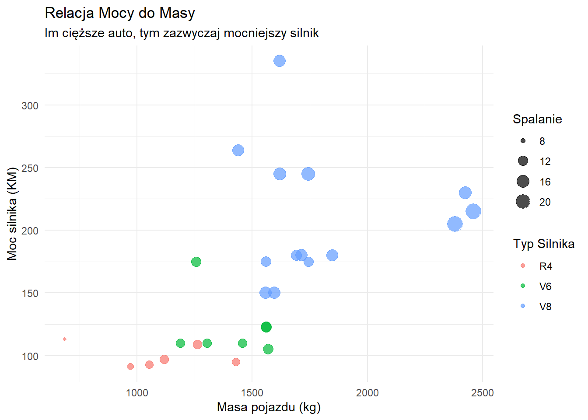
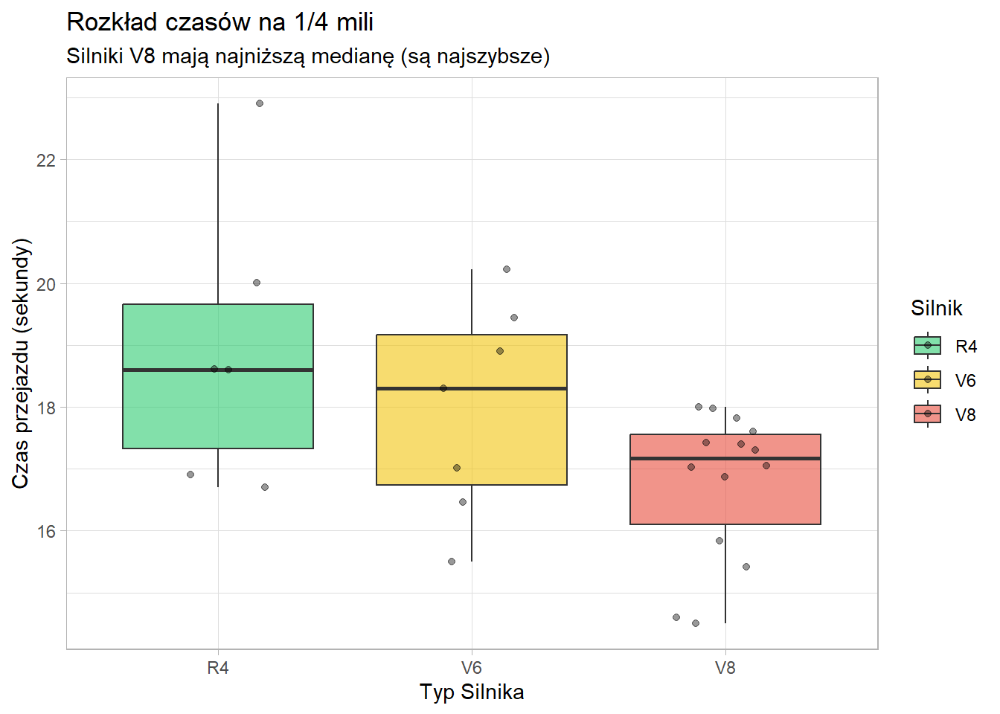
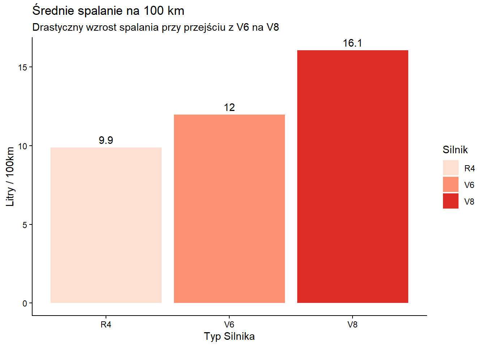

Last updated: 2026-01-18
Checks: 7 0
Knit directory: ProjektZaliczeniowy/
This reproducible R Markdown analysis was created with workflowr (version 1.7.2). The Checks tab describes the reproducibility checks that were applied when the results were created. The Past versions tab lists the development history.
Great! Since the R Markdown file has been committed to the Git repository, you know the exact version of the code that produced these results.
Great job! The global environment was empty. Objects defined in the global environment can affect the analysis in your R Markdown file in unknown ways. For reproduciblity it’s best to always run the code in an empty environment.
The command set.seed(20260110) was run prior to running
the code in the R Markdown file. Setting a seed ensures that any results
that rely on randomness, e.g. subsampling or permutations, are
reproducible.
Great job! Recording the operating system, R version, and package versions is critical for reproducibility.
Nice! There were no cached chunks for this analysis, so you can be confident that you successfully produced the results during this run.
Great job! Using relative paths to the files within your workflowr project makes it easier to run your code on other machines.
Great! You are using Git for version control. Tracking code development and connecting the code version to the results is critical for reproducibility.
The results in this page were generated with repository version 6c5fb23. See the Past versions tab to see a history of the changes made to the R Markdown and HTML files.
Note that you need to be careful to ensure that all relevant files for
the analysis have been committed to Git prior to generating the results
(you can use wflow_publish or
wflow_git_commit). workflowr only checks the R Markdown
file, but you know if there are other scripts or data files that it
depends on. Below is the status of the Git repository when the results
were generated:
Ignored files:
Ignored: .RData
Ignored: .Rhistory
Ignored: .Rproj.user/
Ignored: analysis/prezentacja.html
Note that any generated files, e.g. HTML, png, CSS, etc., are not included in this status report because it is ok for generated content to have uncommitted changes.
These are the previous versions of the repository in which changes were
made to the R Markdown (analysis/analiza.Rmd) and HTML
(docs/analiza.html) files. If you’ve configured a remote
Git repository (see ?wflow_git_remote), click on the
hyperlinks in the table below to view the files as they were in that
past version.
| File | Version | Author | Date | Message |
|---|---|---|---|---|
| Rmd | 6c5fb23 | PtwShadow | 2026-01-18 | Projekt |
| html | 6c5fb23 | PtwShadow | 2026-01-18 | Projekt |
W projekcie analizuję zbiór danych
mtcars. Dane pochodzą z amerykańskiego
magazynu motoryzacyjnego z 1974 roku.
Dlaczego ten zbiór? Ponieważ idealnie nadaje się do symulowania pracy
inżyniera wyścigowego. Zawiera kluczowe parametry techniczne: *
mpg: Zużycie paliwa (Mile na galon). * hp: Moc
silnika (Konie mechaniczne). * wt: Waga (w 1000 funtów). *
qsec: Czas na 1/4 mili (Przyspieszenie). *
cyl: Liczba cylindrów.
Wczytuję niezbędne biblioteki. Używam dplyr i
ggplot2.
library(dplyr)
library(ggplot2)
library(knitr)
data("mtcars")
theme_set(theme_minimal())Wykorzystuję funkcję mutate do
stworzenia nowych kolumn oraz filter, aby
usunąć auta o zbyt niskiej mocy, które zaburzyłyby analizę aut
sportowych.
df_cars <- mtcars %>%
mutate(Model = rownames(mtcars)) %>%
filter(hp > 70) %>%
mutate(
Masa_kg = wt * 1000 * 0.453592,
Spalanie_L100km = 235.21 / mpg,
Skrzynia = ifelse(am == 0, "Automat", "Manual"),
Silnik = factor(cyl, levels = c(4, 6, 8), labels = c("R4", "V6", "V8"))
)
kable(head(df_cars), caption = "Dane po przetworzeniu")| mpg | cyl | disp | hp | drat | wt | qsec | vs | am | gear | carb | Model | Masa_kg | Spalanie_L100km | Skrzynia | Silnik | |
|---|---|---|---|---|---|---|---|---|---|---|---|---|---|---|---|---|
| Mazda RX4 | 21.0 | 6 | 160 | 110 | 3.90 | 2.620 | 16.46 | 0 | 1 | 4 | 4 | Mazda RX4 | 1188.411 | 11.20048 | Manual | V6 |
| Mazda RX4 Wag | 21.0 | 6 | 160 | 110 | 3.90 | 2.875 | 17.02 | 0 | 1 | 4 | 4 | Mazda RX4 Wag | 1304.077 | 11.20048 | Manual | V6 |
| Datsun 710 | 22.8 | 4 | 108 | 93 | 3.85 | 2.320 | 18.61 | 1 | 1 | 4 | 1 | Datsun 710 | 1052.333 | 10.31623 | Manual | R4 |
| Hornet 4 Drive | 21.4 | 6 | 258 | 110 | 3.08 | 3.215 | 19.44 | 1 | 0 | 3 | 1 | Hornet 4 Drive | 1458.298 | 10.99112 | Automat | V6 |
| Hornet Sportabout | 18.7 | 8 | 360 | 175 | 3.15 | 3.440 | 17.02 | 0 | 0 | 3 | 2 | Hornet Sportabout | 1560.356 | 12.57807 | Automat | V8 |
| Valiant | 18.1 | 6 | 225 | 105 | 2.76 | 3.460 | 20.22 | 1 | 0 | 3 | 1 | Valiant | 1569.428 | 12.99503 | Automat | V6 |
Sprawdzam, jak typ silnika wpływa na średnie osiągi. Używam
group_by oraz
summarise.
statystyki_silnika <- df_cars %>%
group_by(Silnik) %>%
summarise(
Liczba_Aut = n(),
Srednia_Moc = mean(hp),
Srednie_Spalanie = mean(Spalanie_L100km),
Sredni_Czas_1_4_mili = mean(qsec)
)
kable(statystyki_silnika, digits = 1, caption = "Średnie osiągi wg typu silnika")| Silnik | Liczba_Aut | Srednia_Moc | Srednie_Spalanie | Sredni_Czas_1_4_mili |
|---|---|---|---|---|
| R4 | 6 | 99.7 | 9.9 | 19.0 |
| V6 | 7 | 122.3 | 12.0 | 18.0 |
| V8 | 14 | 209.2 | 16.1 | 16.8 |
Pierwszy wykres bada korelację. W motorsporcie szukamy aut lekkich i mocnych.
p1 <- ggplot(df_cars, aes(x = Masa_kg, y = hp)) +
geom_point(aes(color = Silnik, size = Spalanie_L100km), alpha = 0.7) +
labs(
title = "Relacja Mocy do Masy",
subtitle = "Im cięższe auto, tym zazwyczaj mocniejszy silnik",
x = "Masa pojazdu (kg)",
y = "Moc silnika (KM)",
color = "Typ Silnika",
size = "Spalanie"
)
print(p1)
| Version | Author | Date |
|---|---|---|
| 6c5fb23 | PtwShadow | 2026-01-18 |
Interpretacja: Widzimy wyraźną korelację dodatnią. Silniki V8 (niebieskie) są montowane w najcięższych autach. Rozmiar kropki wskazuje, że okupione jest to wysokim spalaniem.
Sprawdźmy rozkład czasów przyspieszenia. Czy V8 zawsze jest gwarancją szybkości?
p2 <- ggplot(df_cars, aes(x = Silnik, y = qsec, fill = Silnik)) +
geom_boxplot(alpha = 0.6, outlier.colour = "red") +
geom_jitter(width = 0.2, alpha = 0.4) +
scale_fill_manual(values = c("#2ecc71", "#f1c40f", "#e74c3c")) +
labs(
title = "Rozkład czasów na 1/4 mili",
subtitle = "Silniki V8 mają najniższą medianę (są najszybsze)",
x = "Typ Silnika",
y = "Czas przejazdu (sekundy)"
) +
theme_light()
print(p2)
| Version | Author | Date |
|---|---|---|
| 6c5fb23 | PtwShadow | 2026-01-18 |
Interpretacja: Wykres pudełkowy pokazuje, że silniki V8 są najszybsze (najniższe wartości na osi Y).
Wizualizacja tabeli stworzonej w sekcji 4. Porównujemy średnie spalanie.
p3 <- ggplot(statystyki_silnika, aes(x = Silnik, y = Srednie_Spalanie, fill = Silnik)) +
geom_col() +
geom_text(aes(label = round(Srednie_Spalanie, 1)), vjust = -0.5) +
scale_fill_brewer(palette = "Reds") +
labs(
title = "Średnie spalanie na 100 km",
subtitle = "Drastyczny wzrost spalania przy przejściu z V6 na V8",
x = "Typ Silnika",
y = "Litry / 100km"
) +
theme_classic()
print(p3)
| Version | Author | Date |
|---|---|---|
| 6c5fb23 | PtwShadow | 2026-01-18 |
Interpretacja: Silniki R4 są bardzo oszczędne (~9L/100km), podczas gdy V8 zużywają średnio ponad 15 litrów. To koszt mocy.
Przeprowadzona analiza danych mtcars przy użyciu języka
R pozwoliła na wyciągnięcie następujących wniosków:
sessionInfo()R version 4.5.2 (2025-10-31 ucrt)
Platform: x86_64-w64-mingw32/x64
Running under: Windows 11 x64 (build 26100)
Matrix products: default
LAPACK version 3.12.1
locale:
[1] LC_COLLATE=Polish_Poland.utf8 LC_CTYPE=Polish_Poland.utf8
[3] LC_MONETARY=Polish_Poland.utf8 LC_NUMERIC=C
[5] LC_TIME=Polish_Poland.utf8
time zone: Europe/Warsaw
tzcode source: internal
attached base packages:
[1] stats graphics grDevices utils datasets methods base
other attached packages:
[1] knitr_1.51 ggplot2_4.0.1 dplyr_1.1.4
loaded via a namespace (and not attached):
[1] gtable_0.3.6 jsonlite_2.0.0 compiler_4.5.2 promises_1.5.0
[5] tidyselect_1.2.1 Rcpp_1.1.0 stringr_1.6.0 git2r_0.36.2
[9] later_1.4.4 jquerylib_0.1.4 scales_1.4.0 yaml_2.3.12
[13] fastmap_1.2.0 R6_2.6.1 labeling_0.4.3 generics_0.1.4
[17] workflowr_1.7.2 tibble_3.3.0 rprojroot_2.1.1 RColorBrewer_1.1-3
[21] bslib_0.9.0 pillar_1.11.1 rlang_1.1.6 cachem_1.1.0
[25] stringi_1.8.7 httpuv_1.6.16 xfun_0.55 S7_0.2.1
[29] fs_1.6.6 sass_0.4.10 otel_0.2.0 cli_3.6.5
[33] withr_3.0.2 magrittr_2.0.4 digest_0.6.39 grid_4.5.2
[37] rstudioapi_0.17.1 lifecycle_1.0.5 vctrs_0.6.5 evaluate_1.0.5
[41] glue_1.8.0 farver_2.1.2 whisker_0.4.1 rmarkdown_2.30
[45] tools_4.5.2 pkgconfig_2.0.3 htmltools_0.5.9